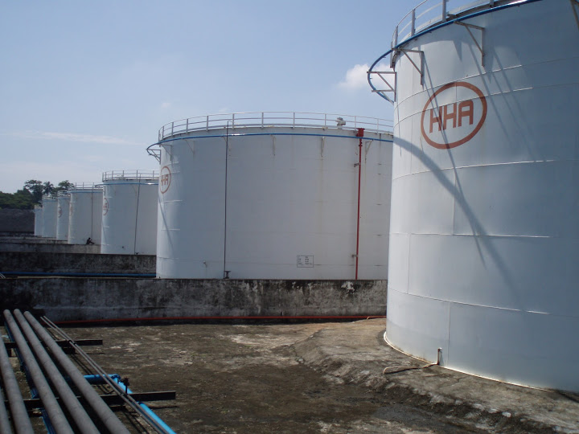
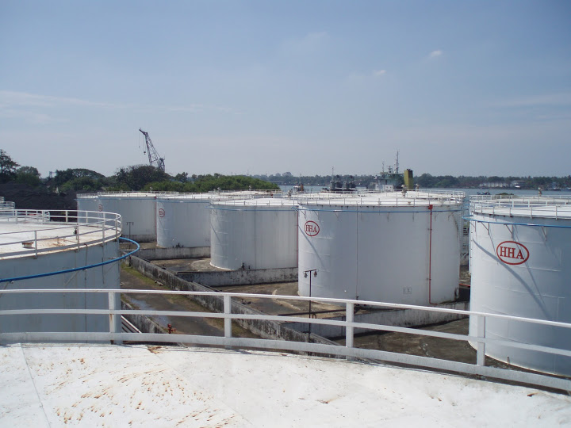
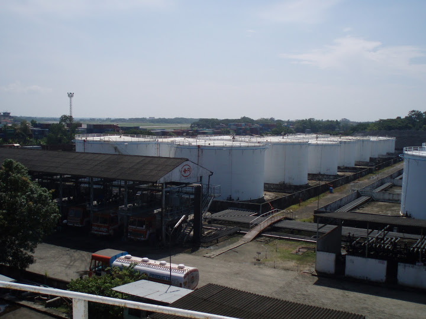

- 
- 
- 
HHA Tank Terminal Pvt. Ltd. is an ISO 9001:2008 bulk liquid terminalling facility at Willingdon Island, Cochin Port. The terminal consists of 30 nos fixed cone roof tanks licensed for storing class "A/B/C" products and 5nos tanks for storing only class "C" products. The layout of the terminal is approved by the Chief Controller of Explosives with an aggregate safe filling capacity of 57000KL. Terminal has all other statutory permissions also such as Factories, Pollution Board, District Collector, Notification of Site by Chief Inspectorate Dock Safety etc. Tanks can be bonded with Customs as well as Excise.
The terminal has been designed and erected with most modern facilities to match international standards. Meticulous attention has been paid to matters of protective measures. Necessary fire fighting devices such as water hydrant system, MVW spray system and foam system as per Tariff Advisory Committee (TAC) requirements have been provided with the help of leading fire consultants.
South Coal Berth (SCB) is the current designated operative Jetty for unloading liquid cargoes and the same is approx. 500 Mtrs away from the Terminal. Draft at SCB is 30ft, LOA - 570 ft,& no restriction on beam size. HHA has four dedicated external pipelines from SCB to the Terminal. 2nos 8" MS line, 1No 10" MS line and 1no 6" SS line. Cochin Port will be soon shifting liquid cargo operations to a newly built berth at Q4 with better draft and length. HHA has already received permission for extending lines to Q4 and have arranged for laying two nos 8" SS lines and 1 no MS line to Q4. The lines will be operational by March 2013. Distance from Q4 berth to HHA Tank Terminal will be approx 1250m. (1.25km)
Terminal has an Eight Bay Tanker loading/unloading facility for Class A/B/C products and a separate 3 Bay Tanker loading/unloading for Class C and non-petroleum products. All the bays are fitted with loading arms and flow meters. Pump house comprises of dedicated product pumps ranging from 7kva to 15kva for delivery of material to Road Tankers. A centrifugal export pump of high capacities for pumping of cargo from Tank to Ship is available with HHA. A special 75HP gear pump is available for pumping viscous products such as Furnace Oil etc from Tanks to Barge/Ships especially for Bunkering/Exports. There are three electronic weigh bridges with maintenance free concrete platforms.
HHA Tank Terminal have customized two of its Tanks as Internal Floating Roof Tanks aggregating to approx 3500kl safe filling capacity. This Tanks can store white petroleum products such as Motor Spirit, Naphtha with negligible evaporational losses.
Bunkering
Cochin Port is one of the bunkering hubs in South Asia Region which provides time bound, cost effective, high quality bunkers with most simplified procedures. HHA Tank Terminal is one of the constituents in Cochin Port suitably equipped for bunkering of petroleum products with its pumps and pipelines at Ammonia Jetty, SCB & Q4 berths. Currently, HHA supports Hindustan Petroleum Corporation Ltd (HPCL) a Government of India owned refinery to carry out fast, timely & high quality bunkering from its Terminal for HPCL’s products such as FO 380cst, FO 180cst, HFHSD etc. In the past also, HHA Tank Terminal have carried out smooth bunkering operations for other private refineries too.
Aviation Turbine Fuel (ATF)
HHA Tank Terminal have customized 15000kl tanks for storing Aviation Turbine Fuel (ATF) for Airlines. It is the only Commercial Terminal in Cochin which is ready for receipt of ATF. The tanks have been made ready in all respects for receipt of ATF after completing the following:
- Re bottoming of tanks to make it saucer bottom with centre sump and water draining facility in line.
- All the ATF storage tanks are Epicoated including the roof and making them fit for ATF storage and handling.
For Receiving ATF
We have dedicated piggable pipe lines from the terminal to the berth to transfer ATF from the ship to the storage tanks. The length of the pipeline is only 500mtrs and normally we get a flow rate of 300-600KL/Hr. Good quality stainless steel flexible hoses are available to connect the ship’s manifold to the pipeline manifold.
For the Delivery of ATF
The designated ATF tanks have individual outlet pipelene connections to the pump house.
Tanker Filling Facility for ATF
The pumps are of cast stainless steel body with mechanical seal coupled to flame proof motor. The discharge rate is 60m3/hr. We have provided basket filter at pump inlet and micro filters (1300LPM & 10 Microns rating) at the outlet. Each tank is provided with re-circulation line with additive injection facility. The outlet line from the micro filter goes to the tanker filling gantry equipped with calibrated flow meters & loading arms which facilitates top loading of lorry tankers.
Power Supply
We have uninterrupted HT power supply of 250kva with stand by generator of 125 KVA capacity.
Personnel
HHA has qualified personnel for its operations and regular maintenance. Terminal has developed standard operating procedures for each and every product handled by them. It has also developed good vendors for handling its comprehensive maintenance of DG sets, Weigh bridges, flow meters, Compressor, Fire Fighting Systems etc and vendors for handling Ship unloading operations.
Safety
Terminal has notified its Safety & Quality policy. All operators and personnel are regulary trained in safety and are made aware of all MSDS and other safety aspects in its regularly conducted safety meetings and mock drills conducted in co-ordination with port fire department , Dock safety team & personnel from Factories & Explosives. An external safety audit is conducted every two years with an internal audit every year.Terminal follows good safety practice and good house keeping practice.